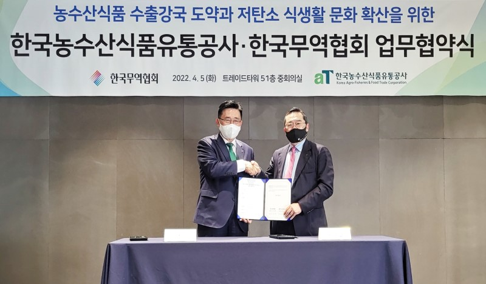

한국농수산식품유통공사(사장 김춘진)와 한국무역협회(회장 구자열)는 5일 삼성동 한국종합무역센터에서 저탄소 식생활 글로벌 확산 및 농수산식품 수출 활성화를 위한 업무협약을 체결했다.
양 기관은 이번 협약을 통해 ▲저탄소 식생활 ‘글로벌 그린푸드 데이’ 캠페인 공동전개 등 ESG 가치 실천 확산 ▲농수산식품 수출확대를 위한 상호협력 등에 힘을 모으기로 했다.
‘코리아 그린푸드 데이’는 우리 모두와 미래세대를 위해 먹거리의 생산유통소비 전 과정에서 발생하는 온실가스 배출량을 줄여 ‘농장에서 식탁까지 Net Zero(탄소중립)’를 실천하는 저탄소 식생활 캠페인으로, 공사는 국내를 넘어 해외에서도 저탄소 식생활에 동참할 수 있도록 ‘글로벌 그린푸드 데이’를 추진하고 있다.
UN 식량농업기구(FAO)에 따르면 먹거리 관련 이산화탄소 배출량은 전체 온실가스 배출량의 31%로 심각한 수준이며, 이에 공사는 먹거리 분야 탄소 절감을 위해 지난해부터 69개 지자체·교육청·협회 등과 업무협약을 맺고 저탄소 식생활 운동을 국내외로 확산시키고 있다.
한국농수산식품유통공사 김춘진 사장은 “우리나라 무역의 새로운 도약을 선도하는 한국무역협회와 ‘글로벌 그린푸드 데이’ 확산에 협력하게 되어 기쁘다”며, “이번 협약으로 저탄소 식생활 실천뿐 아니라 상호 간 수출지원 협력을 통해 대한민국을 농수산식품 수출강국으로 도약시키겠다”고 말했다.